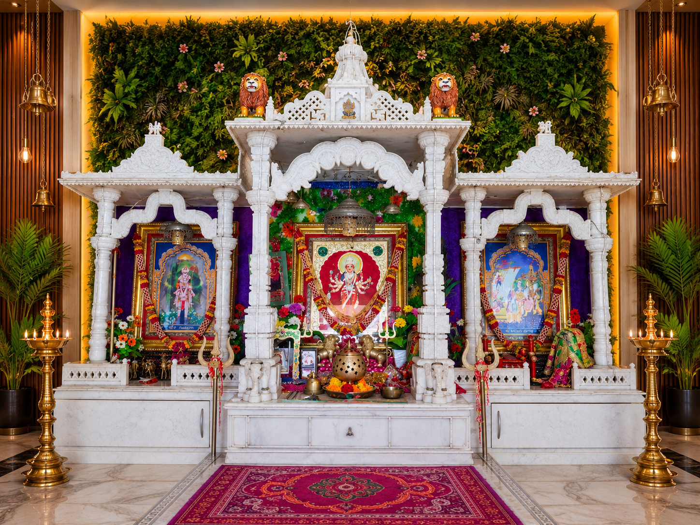

માતાજીનાં દર્શન
ફોટો વિભાગમાં ઉપલબ્ધ માતાજીનાં દર્શન કરો.
ફોટો જુઓૐ જય માતાજી ૐ
સધી સિકોતર માતાજી ઉદલપુરધામ
માતાજીની ભક્તિ, દર્શન, ભજન અને ધાર્મિક માહિતી માટે આપનું હાર્દિક સ્વાગત છે.
દરેક વિભાગ તેના કવર ફોટા સાથે — ખોલવા માટે કાર્ડ પર ક્લિક કરો.

ભજન, આરતી, મંત્ર અને જાપ

માતાજીના પ્રસંગો અને કથાઓ

માતાજીનાં ફોટા અને પાવન દર્શન

ધાર્મિક કાર્યક્રમો અને ઉત્સવો

લાઇવ, આરતી અને કાર્યક્રમોના વિડિયો

મંદિર, પરંપરા અને ઇતિહાસ
આજની તિથિ, નક્ષત્ર, તહેવારો અને શુભ સમય

સરનામું, ફોન અને નકશો
સધી સિકોતર માતાજી ઉદલપુરધામ
સધી સિકોતર માતાજી પ્રત્યેની શ્રદ્ધા અને ભક્તિ ભક્તજનોના જીવનમાં વિશેષ સ્થાન ધરાવે છે. માતાજીનાં દર્શન અને ભક્તિભાવ સાથે જોડાવા માટે આ વેબસાઇટ બનાવવામાં આવી છે.
મંદિરનો ઇતિહાસ, પરંપરા અને પ્રમાણિત માહિતી ઉપલબ્ધ થયા પછી અહીં પ્રકાશિત કરવામાં આવશે.
ભક્તિપ્રેરક પ્રસંગો અને માતાજી સંબંધિત માહિતી
પ્રસંગોની માહિતી લોડ થઈ રહી છે...
ભક્તિ સાથે જોડાયેલા રહો
ફોટો વિભાગમાં ઉપલબ્ધ માતાજીનાં દર્શન કરો.
ફોટો જુઓપ્રકાશિત ભજન અને ભક્તિ સંબંધિત માહિતી જુઓ.
ભજન વિભાગપ્રકાશિત ધાર્મિક કાર્યક્રમો અને ઉત્સવોની માહિતી મેળવો.
ઉત્સવો જુઓ
તિથિ • નક્ષત્ર • ચોઘડિયા • શુભ સમય
ચોઘડિયાના ચોક્કસ સમય અને શુભ/અશુભ પ્રકાર માટે નીચેનું લાઇવ પંચાંગ ખોલો. ચકાસ્યા વગરનો સમય અહીં બતાવવામાં આવતો નથી.
આ માહિતી Ved Panchangના લાઇવ સ્ત્રોતમાંથી આવે છે. APIના ઉપરના કાર્ડ સાથે ડેટા આપમેળે જોડાયેલો નથી, તેથી ચોક્કસ વિગતો માટે આ લાઇવ પંચાંગ જુઓ.
આ ગ્રીગોરિયન માસિક કેલેન્ડર છે; પંચાંગની તિથિ/ચોઘડિયા માટે ઉપરનો લાઇવ સ્ત્રોત જુઓ.
જય શ્રી સધી સિકોતર માતા
એડમિન દ્વારા પ્રકાશિત માહિતી અહીં જોવા મળશે.
ઉત્સવોની માહિતી લોડ થઈ રહી છે...
માતાજીની ભક્તિમાં જોડાઓ
ભજનની માહિતી લોડ થઈ રહી છે...
પ્રકાશિત ભક્તિ વિડિયો અહીં જોવા મળશે.
વિડિયોની માહિતી લોડ થઈ રહી છે...
મંદિરનો સંપર્ક નંબર, સરનામું અને Google Maps દ્વારા રસ્તાની માહિતી અહીં મળશે.
સંપર્કની માહિતી લોડ થઈ રહી છે...